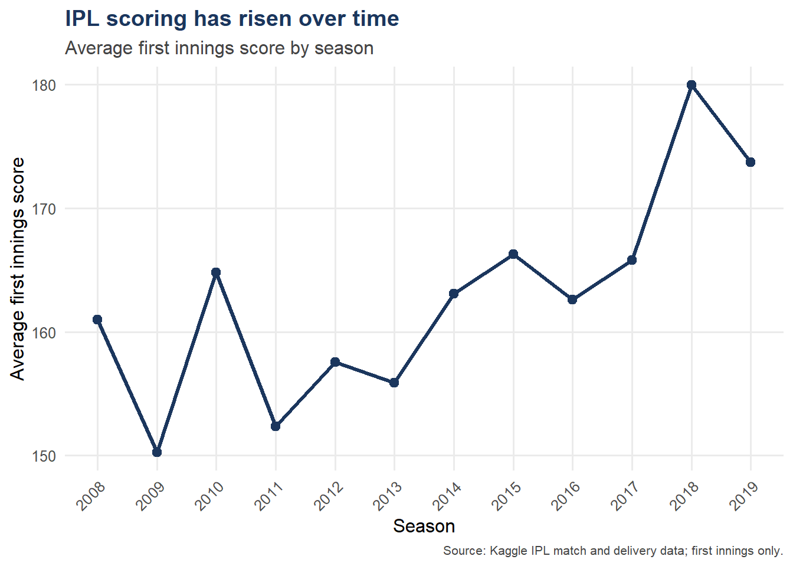
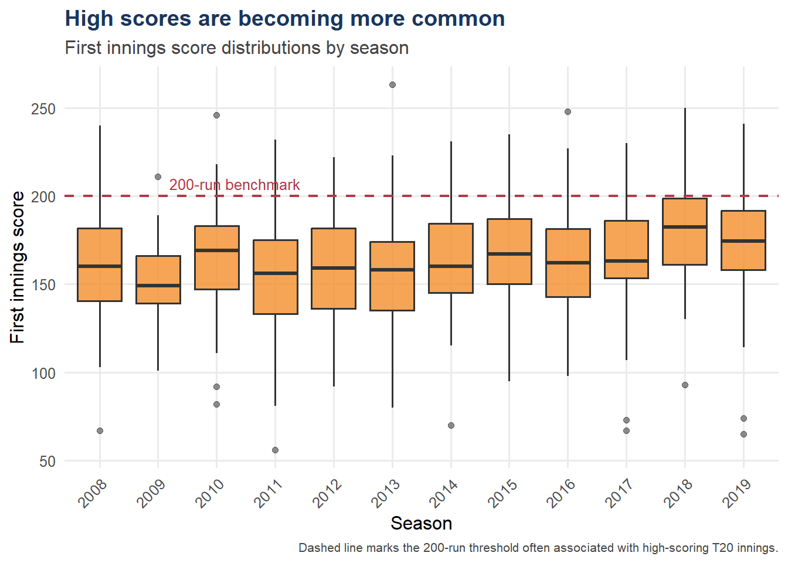
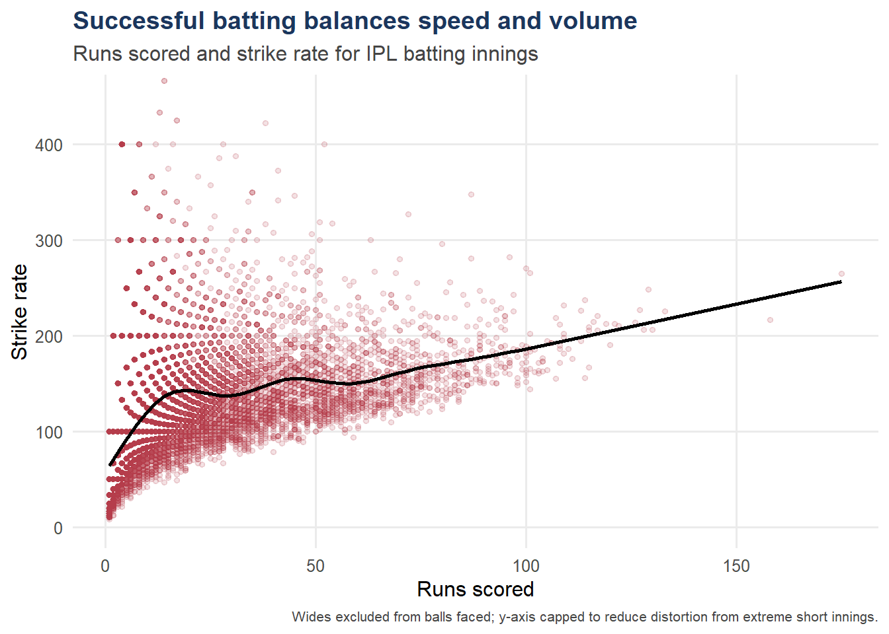
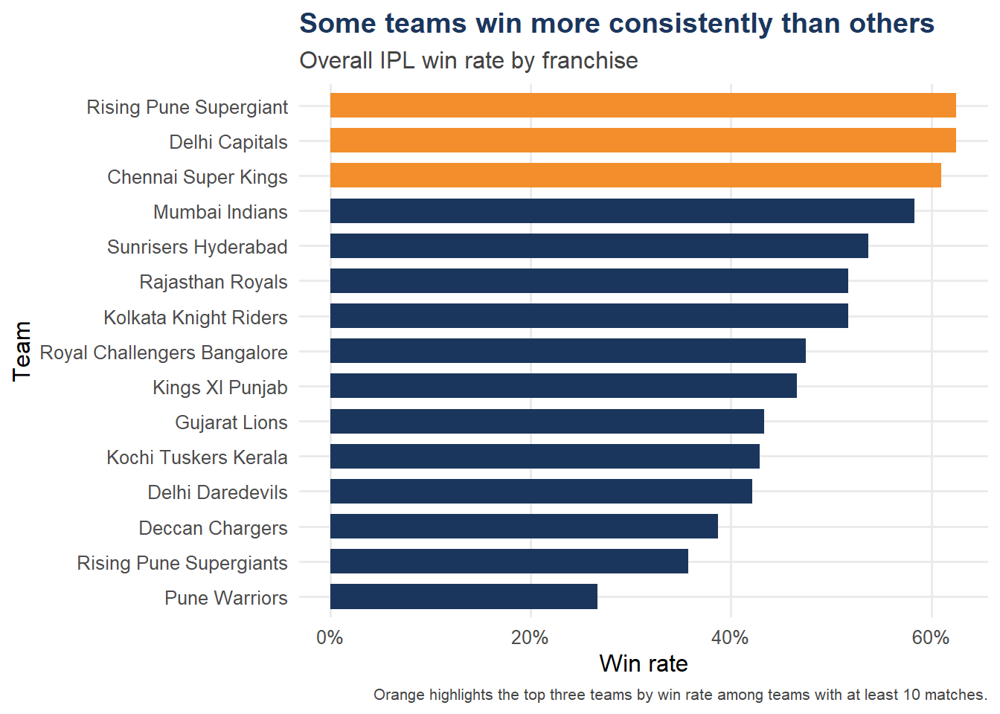
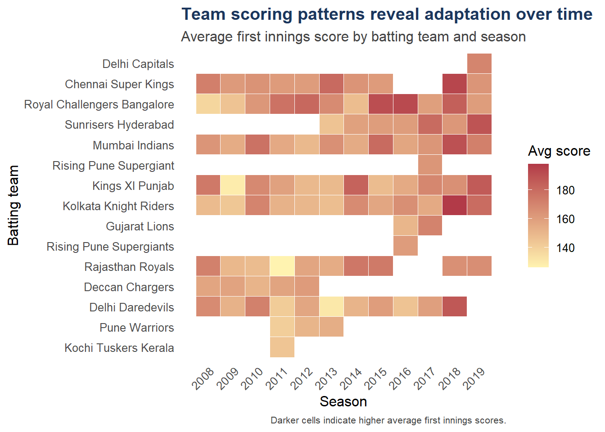

library(tidyverse)
library(scales)
library(ggplot2)MATH X314 Assessment 4B Annotated Code
1. Setup
This file contains the annotated code used to generate the static graphics for the final project portfolio. The comments explain both the transformation steps and the design reasoning behind the graphics.
2. Load Data
Place matches.csv and deliveries.csv inside the data/ folder before rendering.
matches <- read_csv("../data/matches.csv")
deliveries <- read_csv("../data/deliveries.csv")4. Prepare Match and Innings Data
The uploaded dataset uses Season with a capital S. I rename it to season so later code remains consistent.
matches_clean <- matches %>%
select(id, Season, team1, team2, winner) %>%
rename(season = Season) %>%
mutate(season_year = as.integer(str_extract(season, "\\d{4}"))) %>%
filter(!is.na(season_year))
# Aggregate ball-by-ball deliveries into innings totals. This creates one row per innings.
innings_totals <- deliveries %>%
group_by(match_id, inning, batting_team) %>%
summarise(
innings_total = sum(total_runs, na.rm = TRUE),
.groups = "drop"
)
# First innings are used because they are more comparable across matches than chase innings.
first_innings <- innings_totals %>%
filter(inning == 1) %>%
left_join(matches_clean, by = c("match_id" = "id")) %>%
filter(!is.na(season_year))5. Visualisation 1: Average First Innings Score by Season
A line chart is used because the main task is to show change over time.
avg_score_season <- first_innings %>%
group_by(season_year) %>%
summarise(
avg_first_innings_score = mean(innings_total, na.rm = TRUE),
matches = n(),
.groups = "drop"
)
fig1 <- ggplot(avg_score_season, aes(x = season_year, y = avg_first_innings_score)) +
geom_line(linewidth = 1.1, colour = col_primary) +
geom_point(size = 2.4, colour = col_primary) +
labs(
title = "IPL scoring has risen over time",
subtitle = "Average first innings score by season",
x = "Season",
y = "Average first innings score",
caption = "Source: Kaggle IPL match and delivery data; first innings only."
) +
scale_x_continuous(breaks = avg_score_season$season_year) +
base_theme +
theme(axis.text.x = element_text(angle = 45, hjust = 1))
fig1
ggsave("../images/fig1_avg_score_trend.png", fig1, width = 10, height = 6, dpi = 300)6. Visualisation 2: Distribution of First Innings Scores
A boxplot is used to show medians, spread, and high-scoring outliers within each season.
fig2 <- ggplot(first_innings, aes(x = factor(season_year), y = innings_total)) +
geom_boxplot(fill = col_secondary, alpha = 0.8, outlier.alpha = 0.55) +
geom_hline(yintercept = 200, linetype = "dashed", colour = col_accent, linewidth = 0.8) +
annotate("text", x = 2.2, y = 207, label = "200-run benchmark", colour = col_accent, size = 3.4, hjust = 0) +
labs(
title = "High scores are becoming more common",
subtitle = "First innings score distributions by season",
x = "Season",
y = "First innings score",
caption = "Dashed line marks the 200-run threshold often associated with high-scoring T20 innings."
) +
base_theme +
theme(axis.text.x = element_text(angle = 45, hjust = 1))
fig2
ggsave("../images/fig2_score_distribution.png", fig2, width = 10, height = 6, dpi = 300)7. Prepare Batting Data
The uploaded deliveries file uses batsman. Wides are excluded from balls faced because they are not legal balls faced by a batter.
batting_summary <- deliveries %>%
group_by(match_id, batsman) %>%
summarise(
runs_scored = sum(batsman_runs, na.rm = TRUE),
balls_faced = sum(wide_runs == 0, na.rm = TRUE),
.groups = "drop"
) %>%
filter(balls_faced > 0, runs_scored > 0) %>%
mutate(strike_rate = (runs_scored / balls_faced) * 100)8. Visualisation 3: Runs Scored vs Strike Rate
The scatterplot uses transparency because many batting innings overlap visually.
fig3 <- ggplot(batting_summary, aes(x = runs_scored, y = strike_rate)) +
geom_point(alpha = 0.15, size = 1.2, colour = col_accent) +
geom_smooth(se = FALSE, linewidth = 0.9, colour = "black") +
coord_cartesian(ylim = c(0, 450)) +
labs(
title = "Successful batting balances speed and volume",
subtitle = "Runs scored and strike rate for IPL batting innings",
x = "Runs scored",
y = "Strike rate",
caption = "Wides excluded from balls faced; y-axis capped to reduce distortion from extreme short innings."
) +
base_theme
fig3
ggsave("../images/fig3_runs_vs_strike_rate.png", fig3, width = 10, height = 6, dpi = 300)9. Prepare Team Win Rate Data
Each match is converted into two team rows so both teams are counted as having played.
team_wins <- matches %>%
filter(!is.na(winner), winner != "") %>%
select(id, team1, team2, winner)
team_matches <- bind_rows(
team_wins %>% transmute(id, team = team1, winner),
team_wins %>% transmute(id, team = team2, winner)
)
team_summary <- team_matches %>%
group_by(team) %>%
summarise(
matches_played = n(),
wins = sum(team == winner, na.rm = TRUE),
win_rate = wins / matches_played,
.groups = "drop"
) %>%
filter(matches_played >= 10) %>%
arrange(win_rate) %>%
mutate(top_three = rank(-win_rate, ties.method = "first") <= 3)10. Visualisation 4: Team Win Rate
A horizontal bar chart is used because it avoids crowding long team names.
fig4 <- ggplot(team_summary, aes(x = win_rate, y = reorder(team, win_rate), fill = top_three)) +
geom_col(width = 0.7) +
scale_x_continuous(labels = percent_format(accuracy = 1)) +
scale_fill_manual(values = c("TRUE" = col_secondary, "FALSE" = col_primary), guide = "none") +
labs(
title = "Some teams win more consistently than others",
subtitle = "Overall IPL win rate by franchise",
x = "Win rate",
y = "Team",
caption = "Orange highlights the top three teams by win rate among teams with at least 10 matches."
) +
base_theme
fig4
ggsave("../images/fig4_team_win_rate.png", fig4, width = 10, height = 6, dpi = 300)11. Visualisation 5: Team Scoring Heatmap
The heatmap is a higher-order graphic because it combines three dimensions: team, season, and average first innings score.
team_season_scores <- first_innings %>%
group_by(season_year, batting_team) %>%
summarise(
avg_score = mean(innings_total, na.rm = TRUE),
matches = n(),
.groups = "drop"
) %>%
filter(matches >= 2)
fig5 <- ggplot(team_season_scores, aes(x = season_year, y = reorder(batting_team, avg_score), fill = avg_score)) +
geom_tile(colour = "white", linewidth = 0.2) +
scale_fill_gradient(low = "#FFF3B0", high = col_accent, name = "Avg score") +
scale_x_continuous(breaks = sort(unique(team_season_scores$season_year))) +
labs(
title = "Team scoring patterns reveal adaptation over time",
subtitle = "Average first innings score by batting team and season",
x = "Season",
y = "Batting team",
caption = "Darker cells indicate higher average first innings scores."
) +
base_theme +
theme(
panel.grid = element_blank(),
axis.text.x = element_text(angle = 45, hjust = 1)
)
fig5
ggsave("../images/fig5_team_score_heatmap.png", fig5, width = 11, height = 7, dpi = 300)